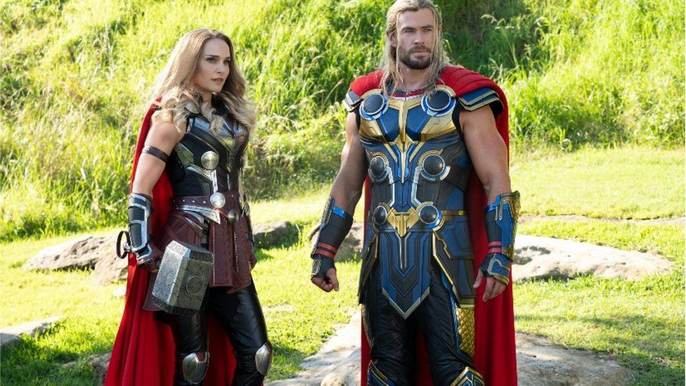

About the Movie
Thor: Love and Thunder is the fourth addition to the Thor franchise from Marvel Studios. The film is directed by Taika Waititi and stars Chris Hemsworth, Natalie Portman, Christian Bale, Taika Waititi and Tessa Thompson.

In the movie, Gorr (Bale) is the villain set to kill all the Gods. Thor (Hemsworth) goes out to recruit Jane Foster (Portman) - who is now Mighty Thor -, Valkyrie (Thompson) and Korg (Waititi). They go through a series of adventures to capture Zeus' lightning bolt, cure's Jane cancer and save a group of children from Gorr.

Pre-production began in Australia in October 2020. Principal photography began in January 2021. The film premiered on June 23, 2022 and grossed $343.3 million in the United States and Canada making it the sixth highest grossing film in 2022. Thor: Love and Thunder has a Rotten Tomatoes score of 64% with a general consensus, "In some ways, Thor: Love and Thunder feels like Ragnarok redux - but overall, it offers enough fast-paced fun to make this a worthy addition to the MCU."